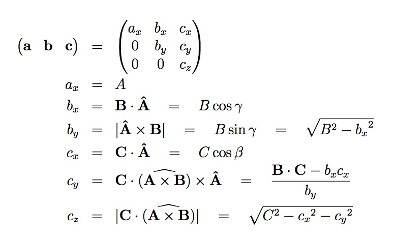
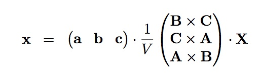
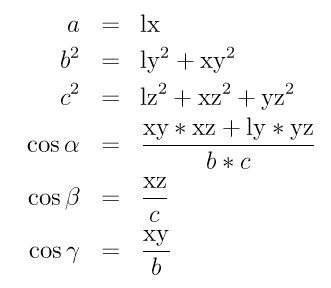
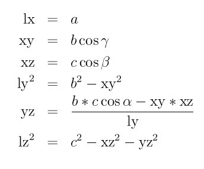

7. How-to discussions¶
This section describes how to perform common tasks using LAMMPS.
The example input scripts included in the LAMMPS distribution and highlighted in Section_example also show how to setup and run various kinds of simulations.
7.1. Restarting a simulation¶
There are 3 ways to continue a long LAMMPS simulation. Multiple run commands can be used in the same input script. Each run will continue from where the previous run left off. Or binary restart files can be saved to disk using the restart command. At a later time, these binary files can be read via a read_restart command in a new script. Or they can be converted to text data files using the -r command-line switch and read by a read_data command in a new script.
Here we give examples of 2 scripts that read either a binary restart file or a converted data file and then issue a new run command to continue where the previous run left off. They illustrate what settings must be made in the new script. Details are discussed in the documentation for the read_restart and read_data commands.
Look at the in.chain input script provided in the bench directory of the LAMMPS distribution to see the original script that these 2 scripts are based on. If that script had the line
restart 50 tmp.restart
added to it, it would produce 2 binary restart files (tmp.restart.50 and tmp.restart.100) as it ran.
This script could be used to read the 1st restart file and re-run the last 50 timesteps:
read_restart tmp.restart.50
neighbor 0.4 bin
neigh_modify every 1 delay 1
fix 1 all nve
fix 2 all langevin 1.0 1.0 10.0 904297
timestep 0.012
run 50
Note that the following commands do not need to be repeated because their settings are included in the restart file: units, atom_style, special_bonds, pair_style, bond_style. However these commands do need to be used, since their settings are not in the restart file: neighbor, fix, timestep.
If you actually use this script to perform a restarted run, you will notice that the thermodynamic data match at step 50 (if you also put a “thermo 50” command in the original script), but do not match at step 100. This is because the fix langevin command uses random numbers in a way that does not allow for perfect restarts.
As an alternate approach, the restart file could be converted to a data file as follows:
lmp_g++ -r tmp.restart.50 tmp.restart.data
Then, this script could be used to re-run the last 50 steps:
units lj
atom_style bond
pair_style lj/cut 1.12
pair_modify shift yes
bond_style fene
special_bonds 0.0 1.0 1.0
read_data tmp.restart.data
neighbor 0.4 bin
neigh_modify every 1 delay 1
fix 1 all nve
fix 2 all langevin 1.0 1.0 10.0 904297
timestep 0.012
reset_timestep 50
run 50
Note that nearly all the settings specified in the original in.chain script must be repeated, except the pair_coeff and bond_coeff commands since the new data file lists the force field coefficients. Also, the reset_timestep command is used to tell LAMMPS the current timestep. This value is stored in restart files, but not in data files.
7.2. 2d simulations¶
Use the dimension command to specify a 2d simulation.
Make the simulation box periodic in z via the boundary command. This is the default.
If using the create box command to define a simulation box, set the z dimensions narrow, but finite, so that the create_atoms command will tile the 3d simulation box with a single z plane of atoms - e.g.
create box 1 -10 10 -10 10 -0.25 0.25
If using the read data command to read in a file of atom coordinates, set the “zlo zhi” values to be finite but narrow, similar to the create_box command settings just described. For each atom in the file, assign a z coordinate so it falls inside the z-boundaries of the box - e.g. 0.0.
Use the fix enforce2d command as the last defined fix to insure that the z-components of velocities and forces are zeroed out every timestep. The reason to make it the last fix is so that any forces induced by other fixes will be zeroed out.
Many of the example input scripts included in the LAMMPS distribution are for 2d models.
Warning
Some models in LAMMPS treat particles as finite-size spheres, as opposed to point particles. In 2d, the particles will still be spheres, not disks, meaning their moment of inertia will be the same as in 3d.
7.3. CHARMM, AMBER, and DREIDING force fields¶
A force field has 2 parts: the formulas that define it and the coefficients used for a particular system. Here we only discuss formulas implemented in LAMMPS that correspond to formulas commonly used in the CHARMM, AMBER, and DREIDING force fields. Setting coefficients is done in the input data file via the read_data command or in the input script with commands like pair_coeff or bond_coeff. See Section_tools for additional tools that can use CHARMM or AMBER to assign force field coefficients and convert their output into LAMMPS input.
See (MacKerell) for a description of the CHARMM force field. See (Cornell) for a description of the AMBER force field.
These style choices compute force field formulas that are consistent with common options in CHARMM or AMBER. See each command’s documentation for the formula it computes.
bond_style harmonic
angle_style charmm
dihedral_style charmm
pair_style lj/charmm/coul/charmm
pair_style lj/charmm/coul/charmm/implicit
pair_style lj/charmm/coul/long
special_bonds charmm
special_bonds amber
DREIDING is a generic force field developed by the Goddard group at Caltech and is useful for predicting structures and dynamics of organic, biological and main-group inorganic molecules. The philosophy in DREIDING is to use general force constants and geometry parameters based on simple hybridization considerations, rather than individual force constants and geometric parameters that depend on the particular combinations of atoms involved in the bond, angle, or torsion terms. DREIDING has an explicit hydrogen bond term to describe interactions involving a hydrogen atom on very electronegative atoms (N, O, F).
See (Mayo) for a description of the DREIDING force field
These style choices compute force field formulas that are consistent with the DREIDING force field. See each command’s documentation for the formula it computes.
bond_style harmonic
bond_style morse
angle_style harmonic
angle_style cosine
angle_style cosine/periodic
dihedral_style charmm
improper_style umbrella
pair_style buck
pair_style buck/coul/cut
pair_style buck/coul/long
pair_style lj/cut
pair_style lj/cut/coul/cut
pair_style lj/cut/coul/long
pair_style hbond/dreiding/lj
pair_style hbond/dreiding/morse
special_bonds dreiding
7.4. Running multiple simulations from one input script¶
This can be done in several ways. See the documentation for individual commands for more details on how these examples work.
If “multiple simulations” means continue a previous simulation for more timesteps, then you simply use the run command multiple times. For example, this script
units lj
atom_style atomic
read_data data.lj
run 10000
run 10000
run 10000
run 10000
run 10000
would run 5 successive simulations of the same system for a total of 50,000 timesteps.
If you wish to run totally different simulations, one after the other, the clear command can be used in between them to re-initialize LAMMPS. For example, this script
units lj
atom_style atomic
read_data data.lj
run 10000
clear
units lj
atom_style atomic
read_data data.lj.new
run 10000
would run 2 independent simulations, one after the other.
For large numbers of independent simulations, you can use variables and the next and jump commands to loop over the same input script multiple times with different settings. For example, this script, named in.polymer
variable d index run1 run2 run3 run4 run5 run6 run7 run8
shell cd $d
read_data data.polymer
run 10000
shell cd ..
clear
next d
jump in.polymer
would run 8 simulations in different directories, using a data.polymer file in each directory. The same concept could be used to run the same system at 8 different temperatures, using a temperature variable and storing the output in different log and dump files, for example
variable a loop 8
variable t index 0.8 0.85 0.9 0.95 1.0 1.05 1.1 1.15
log log.$a
read data.polymer
velocity all create $t 352839
fix 1 all nvt $t $t 100.0
dump 1 all atom 1000 dump.$a
run 100000
next t
next a
jump in.polymer
All of the above examples work whether you are running on 1 or multiple processors, but assumed you are running LAMMPS on a single partition of processors. LAMMPS can be run on multiple partitions via the “-partition” command-line switch as described in this section of the manual.
In the last 2 examples, if LAMMPS were run on 3 partitions, the same scripts could be used if the “index” and “loop” variables were replaced with universe-style variables, as described in the variable command. Also, the “next t” and “next a” commands would need to be replaced with a single “next a t” command. With these modifications, the 8 simulations of each script would run on the 3 partitions one after the other until all were finished. Initially, 3 simulations would be started simultaneously, one on each partition. When one finished, that partition would then start the 4th simulation, and so forth, until all 8 were completed.
7.5. Multi-replica simulations¶
Several commands in LAMMPS run mutli-replica simulations, meaning that multiple instances (replicas) of your simulation are run simultaneously, with small amounts of data exchanged between replicas periodically.
These are the relevant commands:
neb for nudged elastic band calculations
prd for parallel replica dynamics
tad for temperature accelerated dynamics
temper for parallel tempering
NEB is a method for finding transition states and barrier energies. PRD and TAD are methods for performing accelerated dynamics to find and perform infrequent events. Parallel tempering or replica exchange runs different replicas at a series of temperature to facilitate rare-event sampling.
These command can only be used if LAMMPS was built with the “replica” package. See the Making LAMMPS section for more info on packages.
In all these cases, you must run with one or more processors per replica. The processors assigned to each replica are determined at run-time by using the -partition command-line switch to launch LAMMPS on multiple partitions, which in this context are the same as replicas. E.g. these commands:
mpirun -np 16 lmp_linux -partition 8x2 -in in.temper
mpirun -np 8 lmp_linux -partition 8x1 -in in.neb
would each run 8 replicas, on either 16 or 8 processors. Note the use of the -in command-line switch to specify the input script which is required when running in multi-replica mode.
Also note that with MPI installed on a machine (e.g. your desktop), you can run on more (virtual) processors than you have physical processors. Thus the above commands could be run on a single-processor (or few-processor) desktop so that you can run a multi-replica simulation on more replicas than you have physical processors.
7.6. Granular models¶
Granular system are composed of spherical particles with a diameter, as opposed to point particles. This means they have an angular velocity and torque can be imparted to them to cause them to rotate.
To run a simulation of a granular model, you will want to use the following commands:
This compute
calculates rotational kinetic energy which can be output with thermodynamic info.
Use one of these 3 pair potentials, which compute forces and torques between interacting pairs of particles:
pair_style gran/history
pair_style gran/no_history
pair_style gran/hertzian
These commands implement fix options specific to granular systems:
The fix style freeze zeroes both the force and torque of frozen atoms, and should be used for granular system instead of the fix style setforce.
For computational efficiency, you can eliminate needless pairwise computations between frozen atoms by using this command:
neigh_modify exclude
7.7. TIP3P water model¶
The TIP3P water model as implemented in CHARMM (MacKerell) specifies a 3-site rigid water molecule with charges and Lennard-Jones parameters assigned to each of the 3 atoms. In LAMMPS the fix shake command can be used to hold the two O-H bonds and the H-O-H angle rigid. A bond style of harmonic and an angle style of harmonic or charmm should also be used.
These are the additional parameters (in real units) to set for O and H atoms and the water molecule to run a rigid TIP3P-CHARMM model with a cutoff. The K values can be used if a flexible TIP3P model (without fix shake) is desired. If the LJ epsilon and sigma for HH and OH are set to 0.0, it corresponds to the original 1983 TIP3P model (Jorgensen).
These are the parameters to use for TIP3P with a long-range Coulombic solver (e.g. Ewald or PPPM in LAMMPS), see (Price) for details:
Wikipedia also has a nice article on water models.
7.8. TIP4P water model¶
The four-point TIP4P rigid water model extends the traditional three-point TIP3P model by adding an additional site, usually massless, where the charge associated with the oxygen atom is placed. This site M is located at a fixed distance away from the oxygen along the bisector of the HOH bond angle. A bond style of harmonic and an angle style of harmonic or charmm should also be used.
A TIP4P model is run with LAMMPS using either this command for a cutoff model:
or these two commands for a long-range model:
For both models, the bond lengths and bond angles should be held fixed using the fix shake command.
These are the additional parameters (in real units) to set for O and H atoms and the water molecule to run a rigid TIP4P model with a cutoff (Jorgensen). Note that the OM distance is specified in the pair_style command, not as part of the pair coefficients.
For the TIP4/Ice model (J Chem Phys, 122, 234511 (2005); http://dx.doi.org/10.1063/1.1931662) these values can be used:
For the TIP4P/2005 model (J Chem Phys, 123, 234505 (2005); http://dx.doi.org/10.1063/1.2121687), these values can be used:
These are the parameters to use for TIP4P with a long-range Coulombic solver (e.g. Ewald or PPPM in LAMMPS):
Note that the when using the TIP4P pair style, the neighbor list cutoff for Coulomb interactions is effectively extended by a distance 2 * (OM distance), to account for the offset distance of the fictitious charges on O atoms in water molecules. Thus it is typically best in an efficiency sense to use a LJ cutoff >= Coulomb cutoff + 2*(OM distance), to shrink the size of the neighbor list. This leads to slightly larger cost for the long-range calculation, so you can test the trade-off for your model. The OM distance and the LJ and Coulombic cutoffs are set in the pair_style lj/cut/tip4p/long command.
Wikipedia also has a nice article on water models.
7.9. SPC water model¶
The SPC water model specifies a 3-site rigid water molecule with charges and Lennard-Jones parameters assigned to each of the 3 atoms. In LAMMPS the fix shake command can be used to hold the two O-H bonds and the H-O-H angle rigid. A bond style of harmonic and an angle style of harmonic or charmm should also be used.
These are the additional parameters (in real units) to set for O and H atoms and the water molecule to run a rigid SPC model.
Note that as originally proposed, the SPC model was run with a 9 Angstrom cutoff for both LJ and Coulommbic terms. It can also be used with long-range Coulombics (Ewald or PPPM in LAMMPS), without changing any of the parameters above, though it becomes a different model in that mode of usage.
The SPC/E (extended) water model is the same, except the partial charge assignments change:
See the (Berendsen) reference for more details on both the SPC and SPC/E models.
Wikipedia also has a nice article on water models.
7.10. Coupling LAMMPS to other codes¶
LAMMPS is designed to allow it to be coupled to other codes. For example, a quantum mechanics code might compute forces on a subset of atoms and pass those forces to LAMMPS. Or a continuum finite element (FE) simulation might use atom positions as boundary conditions on FE nodal points, compute a FE solution, and return interpolated forces on MD atoms.
LAMMPS can be coupled to other codes in at least 3 ways. Each has advantages and disadvantages, which you’ll have to think about in the context of your application.
(1) Define a new fix command that calls the other code. In this scenario, LAMMPS is the driver code. During its timestepping, the fix is invoked, and can make library calls to the other code, which has been linked to LAMMPS as a library. This is the way the POEMS package that performs constrained rigid-body motion on groups of atoms is hooked to LAMMPS. See the fix poems command for more details. See this section of the documentation for info on how to add a new fix to LAMMPS.
(2) Define a new LAMMPS command that calls the other code. This is conceptually similar to method (1), but in this case LAMMPS and the other code are on a more equal footing. Note that now the other code is not called during the timestepping of a LAMMPS run, but between runs. The LAMMPS input script can be used to alternate LAMMPS runs with calls to the other code, invoked via the new command. The run command facilitates this with its every option, which makes it easy to run a few steps, invoke the command, run a few steps, invoke the command, etc.
In this scenario, the other code can be called as a library, as in (1), or it could be a stand-alone code, invoked by a system() call made by the command (assuming your parallel machine allows one or more processors to start up another program). In the latter case the stand-alone code could communicate with LAMMPS through files that the command writes and reads.
See Section_modify of the documentation for how to add a new command to LAMMPS.
(3) Use LAMMPS as a library called by another code. In this case the other code is the driver and calls LAMMPS as needed. Or a wrapper code could link and call both LAMMPS and another code as libraries. Again, the run command has options that allow it to be invoked with minimal overhead (no setup or clean-up) if you wish to do multiple short runs, driven by another program.
Examples of driver codes that call LAMMPS as a library are included in the examples/COUPLE directory of the LAMMPS distribution; see examples/COUPLE/README for more details:
simple: simple driver programs in C++ and C which invoke LAMMPS as a library
lammps_quest: coupling of LAMMPS and Quest, to run classical MD with quantum forces calculated by a density functional code
lammps_spparks: coupling of LAMMPS and SPPARKS, to couple a kinetic Monte Carlo model for grain growth using MD to calculate strain induced across grain boundaries
This section of the documentation describes how to build LAMMPS as a library. Once this is done, you can interface with LAMMPS either via C++, C, Fortran, or Python (or any other language that supports a vanilla C-like interface). For example, from C++ you could create one (or more) “instances” of LAMMPS, pass it an input script to process, or execute individual commands, all by invoking the correct class methods in LAMMPS. From C or Fortran you can make function calls to do the same things. See Section_python of the manual for a description of the Python wrapper provided with LAMMPS that operates through the LAMMPS library interface.
The files src/library.cpp and library.h contain the C-style interface to LAMMPS. See Section_howto 19 of the manual for a description of the interface and how to extend it for your needs.
Note that the lammps_open() function that creates an instance of LAMMPS takes an MPI communicator as an argument. This means that instance of LAMMPS will run on the set of processors in the communicator. Thus the calling code can run LAMMPS on all or a subset of processors. For example, a wrapper script might decide to alternate between LAMMPS and another code, allowing them both to run on all the processors. Or it might allocate half the processors to LAMMPS and half to the other code and run both codes simultaneously before syncing them up periodically. Or it might instantiate multiple instances of LAMMPS to perform different calculations.
7.11. Visualizing LAMMPS snapshots¶
LAMMPS itself does not do visualization, but snapshots from LAMMPS simulations can be visualized (and analyzed) in a variety of ways.
LAMMPS snapshots are created by the dump command which can create files in several formats. The native LAMMPS dump format is a text file (see “dump atom” or “dump custom”) which can be visualized by the xmovie program, included with the LAMMPS package. This produces simple, fast 2d projections of 3d systems, and can be useful for rapid debugging of simulation geometry and atom trajectories.
Several programs included with LAMMPS as auxiliary tools can convert native LAMMPS dump files to other formats. See the Section_tools doc page for details. The first is the ch2lmp tool, which contains a lammps2pdb Perl script which converts LAMMPS dump files into PDB files. The second is the lmp2arc tool which converts LAMMPS dump files into Accelrys’ Insight MD program files. The third is the lmp2cfg tool which converts LAMMPS dump files into CFG files which can be read into the AtomEye visualizer.
A Python-based toolkit distributed by our group can read native LAMMPS dump files, including custom dump files with additional columns of user-specified atom information, and convert them to various formats or pipe them into visualization software directly. See the Pizza.py WWW site for details. Specifically, Pizza.py can convert LAMMPS dump files into PDB, XYZ, Ensight, and VTK formats. Pizza.py can pipe LAMMPS dump files directly into the Raster3d and RasMol visualization programs. Pizza.py has tools that do interactive 3d OpenGL visualization and one that creates SVG images of dump file snapshots.
LAMMPS can create XYZ files directly (via “dump xyz”) which is a simple text-based file format used by many visualization programs including VMD.
LAMMPS can create DCD files directly (via “dump dcd”) which can be read by VMD in conjunction with a CHARMM PSF file. Using this form of output avoids the need to convert LAMMPS snapshots to PDB files. See the dump command for more information on DCD files.
LAMMPS can create XTC files directly (via “dump xtc”) which is GROMACS file format which can also be read by VMD for visualization. See the dump command for more information on XTC files.
7.12. Triclinic (non-orthogonal) simulation boxes¶
By default, LAMMPS uses an orthogonal simulation box to encompass the particles. The boundary command sets the boundary conditions of the box (periodic, non-periodic, etc). The orthogonal box has its “origin” at (xlo,ylo,zlo) and is defined by 3 edge vectors starting from the origin given by a = (xhi-xlo,0,0); b = (0,yhi-ylo,0); c = (0,0,zhi-zlo). The 6 parameters (xlo,xhi,ylo,yhi,zlo,zhi) are defined at the time the simulation box is created, e.g. by the create_box or read_data or read_restart commands. Additionally, LAMMPS defines box size parameters lx,ly,lz where lx = xhi-xlo, and similarly in the y and z dimensions. The 6 parameters, as well as lx,ly,lz, can be output via the thermo_style custom command.
LAMMPS also allows simulations to be performed in triclinic (non-orthogonal) simulation boxes shaped as a parallelepiped with triclinic symmetry. The parallelepiped has its “origin” at (xlo,ylo,zlo) and is defined by 3 edge vectors starting from the origin given by a = (xhi-xlo,0,0); b = (xy,yhi-ylo,0); c = (xz,yz,zhi-zlo). xy,xz,yz can be 0.0 or positive or negative values and are called “tilt factors” because they are the amount of displacement applied to faces of an originally orthogonal box to transform it into the parallelepiped. In LAMMPS the triclinic simulation box edge vectors a, b, and c cannot be arbitrary vectors. As indicated, a must lie on the positive x axis. b must lie in the xy plane, with strictly positive y component. c may have any orientation with strictly positive z component. The requirement that a, b, and c have strictly positive x, y, and z components, respectively, ensures that a, b, and c form a complete right-handed basis. These restrictions impose no loss of generality, since it is possible to rotate/invert any set of 3 crystal basis vectors so that they conform to the restrictions.
For example, assume that the 3 vectors A,B,C are the edge vectors of a general parallelepiped, where there is no restriction on A,B,C other than they form a complete right-handed basis i.e. A x B . C > 0. The equivalent LAMMPS a,b,c are a linear rotation of A, B, and C and can be computed as follows:
where A = |A| indicates the scalar length of A. The ^ hat symbol indicates the corresponding unit vector. beta and gamma are angles between the vectors described below. Note that by construction, a, b, and c have strictly positive x, y, and z components, respectively. If it should happen that A, B, and C form a left-handed basis, then the above equations are not valid for c. In this case, it is necessary to first apply an inversion. This can be achieved by interchanging two basis vectors or by changing the sign of one of them.
For consistency, the same rotation/inversion applied to the basis vectors must also be applied to atom positions, velocities, and any other vector quantities. This can be conveniently achieved by first converting to fractional coordinates in the old basis and then converting to distance coordinates in the new basis. The transformation is given by the following equation:
where V is the volume of the box, X is the original vector quantity and x is the vector in the LAMMPS basis.
There is no requirement that a triclinic box be periodic in any dimension, though it typically should be in at least the 2nd dimension of the tilt (y in xy) if you want to enforce a shift in periodic boundary conditions across that boundary. Some commands that work with triclinic boxes, e.g. the fix deform and fix npt commands, require periodicity or non-shrink-wrap boundary conditions in specific dimensions. See the command doc pages for details.
The 9 parameters (xlo,xhi,ylo,yhi,zlo,zhi,xy,xz,yz) are defined at the time the simulation box is created. This happens in one of 3 ways. If the create_box command is used with a region of style prism, then a triclinic box is setup. See the region command for details. If the read_data command is used to define the simulation box, and the header of the data file contains a line with the “xy xz yz” keyword, then a triclinic box is setup. See the read_data command for details. Finally, if the read_restart command reads a restart file which was written from a simulation using a triclinic box, then a triclinic box will be setup for the restarted simulation.
Note that you can define a triclinic box with all 3 tilt factors = 0.0, so that it is initially orthogonal. This is necessary if the box will become non-orthogonal, e.g. due to the fix npt or fix deform commands. Alternatively, you can use the change_box command to convert a simulation box from orthogonal to triclinic and vice versa.
As with orthogonal boxes, LAMMPS defines triclinic box size parameters lx,ly,lz where lx = xhi-xlo, and similarly in the y and z dimensions. The 9 parameters, as well as lx,ly,lz, can be output via the thermo_style custom command.
To avoid extremely tilted boxes (which would be computationally inefficient), LAMMPS normally requires that no tilt factor can skew the box more than half the distance of the parallel box length, which is the 1st dimension in the tilt factor (x for xz). This is required both when the simulation box is created, e.g. via the create_box or read_data commands, as well as when the box shape changes dynamically during a simulation, e.g. via the fix deform or fix npt commands.
For example, if xlo = 2 and xhi = 12, then the x box length is 10 and the xy tilt factor must be between -5 and 5. Similarly, both xz and yz must be between -(xhi-xlo)/2 and +(yhi-ylo)/2. Note that this is not a limitation, since if the maximum tilt factor is 5 (as in this example), then configurations with tilt = …, -15, -5, 5, 15, 25, … are geometrically all equivalent. If the box tilt exceeds this limit during a dynamics run (e.g. via the fix deform command), then the box is “flipped” to an equivalent shape with a tilt factor within the bounds, so the run can continue. See the fix deform doc page for further details.
One exception to this rule is if the 1st dimension in the tilt factor (x for xy) is non-periodic. In that case, the limits on the tilt factor are not enforced, since flipping the box in that dimension does not change the atom positions due to non-periodicity. In this mode, if you tilt the system to extreme angles, the simulation will simply become inefficient, due to the highly skewed simulation box.
The limitation on not creating a simulation box with a tilt factor skewing the box more than half the distance of the parallel box length can be overridden via the box command. Setting the tilt keyword to large allows any tilt factors to be specified.
Box flips that may occur using the fix deform or fix npt commands can be turned off using the flip no option with either of the commands.
Note that if a simulation box has a large tilt factor, LAMMPS will run less efficiently, due to the large volume of communication needed to acquire ghost atoms around a processor’s irregular-shaped sub-domain. For extreme values of tilt, LAMMPS may also lose atoms and generate an error.
Triclinic crystal structures are often defined using three lattice constants a, b, and c, and three angles alpha, beta and gamma. Note that in this nomenclature, the a, b, and c lattice constants are the scalar lengths of the edge vectors a, b, and c defined above. The relationship between these 6 quantities (a,b,c,alpha,beta,gamma) and the LAMMPS box sizes (lx,ly,lz) = (xhi-xlo,yhi-ylo,zhi-zlo) and tilt factors (xy,xz,yz) is as follows:
The inverse relationship can be written as follows:
The values of a, b, c , alpha, beta , and gamma can be printed out or accessed by computes using the thermo_style custom keywords cella, cellb, cellc, cellalpha, cellbeta, cellgamma, respectively.
As discussed on the dump command doc page, when the BOX BOUNDS for a snapshot is written to a dump file for a triclinic box, an orthogonal bounding box which encloses the triclinic simulation box is output, along with the 3 tilt factors (xy, xz, yz) of the triclinic box, formatted as follows:
ITEM: BOX BOUNDS xy xz yz
xlo_bound xhi_bound xy
ylo_bound yhi_bound xz
zlo_bound zhi_bound yz
This bounding box is convenient for many visualization programs and is calculated from the 9 triclinic box parameters (xlo,xhi,ylo,yhi,zlo,zhi,xy,xz,yz) as follows:
xlo_bound = xlo + MIN(0.0,xy,xz,xy+xz)
xhi_bound = xhi + MAX(0.0,xy,xz,xy+xz)
ylo_bound = ylo + MIN(0.0,yz)
yhi_bound = yhi + MAX(0.0,yz)
zlo_bound = zlo
zhi_bound = zhi
These formulas can be inverted if you need to convert the bounding box back into the triclinic box parameters, e.g. xlo = xlo_bound - MIN(0.0,xy,xz,xy+xz).
One use of triclinic simulation boxes is to model solid-state crystals with triclinic symmetry. The lattice command can be used with non-orthogonal basis vectors to define a lattice that will tile a triclinic simulation box via the create_atoms command.
A second use is to run Parinello-Rahman dynamics via the fix npt command, which will adjust the xy, xz, yz tilt factors to compensate for off-diagonal components of the pressure tensor. The analog for an energy minimization is the fix box/relax command.
A third use is to shear a bulk solid to study the response of the material. The fix deform command can be used for this purpose. It allows dynamic control of the xy, xz, yz tilt factors as a simulation runs. This is discussed in the next section on non-equilibrium MD (NEMD) simulations.
7.13. NEMD simulations¶
Non-equilibrium molecular dynamics or NEMD simulations are typically used to measure a fluid’s rheological properties such as viscosity. In LAMMPS, such simulations can be performed by first setting up a non-orthogonal simulation box (see the preceding Howto section).
A shear strain can be applied to the simulation box at a desired strain rate by using the fix deform command. The fix nvt/sllod command can be used to thermostat the sheared fluid and integrate the SLLOD equations of motion for the system. Fix nvt/sllod uses compute temp/deform to compute a thermal temperature by subtracting out the streaming velocity of the shearing atoms. The velocity profile or other properties of the fluid can be monitored via the fix ave/spatial command.
As discussed in the previous section on non-orthogonal simulation boxes, the amount of tilt or skew that can be applied is limited by LAMMPS for computational efficiency to be 1/2 of the parallel box length. However, fix deform can continuously strain a box by an arbitrary amount. As discussed in the fix deform command, when the tilt value reaches a limit, the box is flipped to the opposite limit which is an equivalent tiling of periodic space. The strain rate can then continue to change as before. In a long NEMD simulation these box re-shaping events may occur many times.
In a NEMD simulation, the “remap” option of fix deform should be set to “remap v”, since that is what fix nvt/sllod assumes to generate a velocity profile consistent with the applied shear strain rate.
An alternative method for calculating viscosities is provided via the fix viscosity command.
7.14. Finite-size spherical and aspherical particles¶
Typical MD models treat atoms or particles as point masses. Sometimes it is desirable to have a model with finite-size particles such as spheroids or ellipsoids or generalized aspherical bodies. The difference is that such particles have a moment of inertia, rotational energy, and angular momentum. Rotation is induced by torque coming from interactions with other particles.
LAMMPS has several options for running simulations with these kinds of particles. The following aspects are discussed in turn:
atom styles
pair potentials
time integration
computes, thermodynamics, and dump output
rigid bodies composed of finite-size particles
Example input scripts for these kinds of models are in the body, colloid, dipole, ellipse, line, peri, pour, and tri directories of the examples directory in the LAMMPS distribution.
7.14.1. Atom styles¶
There are several atom styles that allow for definition of finite-size particles: sphere, dipole, ellipsoid, line, tri, peri, and body.
The sphere style defines particles that are spheriods and each particle can have a unique diameter and mass (or density). These particles store an angular velocity (omega) and can be acted upon by torque. The “set” command can be used to modify the diameter and mass of individual particles, after then are created.
The dipole style does not actually define finite-size particles, but is often used in conjunction with spherical particles, via a command like
atom_style hybrid sphere dipole
This is because when dipoles interact with each other, they induce torques, and a particle must be finite-size (i.e. have a moment of inertia) in order to respond and rotate. See the atom_style dipole command for details. The “set” command can be used to modify the orientation and length of the dipole moment of individual particles, after then are created.
The ellipsoid style defines particles that are ellipsoids and thus can be aspherical. Each particle has a shape, specified by 3 diameters, and mass (or density). These particles store an angular momentum and their orientation (quaternion), and can be acted upon by torque. They do not store an angular velocity (omega), which can be in a different direction than angular momentum, rather they compute it as needed. The “set” command can be used to modify the diameter, orientation, and mass of individual particles, after then are created. It also has a brief explanation of what quaternions are.
The line style defines line segment particles with two end points and a mass (or density). They can be used in 2d simulations, and they can be joined together to form rigid bodies which represent arbitrary polygons.
The tri style defines triangular particles with three corner points and a mass (or density). They can be used in 3d simulations, and they can be joined together to form rigid bodies which represent arbitrary particles with a triangulated surface.
The peri style is used with Peridynamic models and defines particles as having a volume, that is used internally in the pair_style peri potentials.
The body style allows for definition of particles which can represent complex entities, such as surface meshes of discrete points, collections of sub-particles, deformable objects, etc. The body style is discussed in more detail on the body doc page.
Note that if one of these atom styles is used (or multiple styles via the atom_style hybrid command), not all particles in the system are required to be finite-size or aspherical.
For example, in the ellipsoid style, if the 3 shape parameters are set to the same value, the particle will be a sphere rather than an ellipsoid. If the 3 shape parameters are all set to 0.0 or if the diameter is set to 0.0, it will be a point particle. In the line or tri style, if the lineflag or triflag is specified as 0, then it will be a point particle.
Some of the pair styles used to compute pairwise interactions between finite-size particles also compute the correct interaction with point particles as well, e.g. the interaction between a point particle and a finite-size particle or between two point particles. If necessary, pair_style hybrid can be used to insure the correct interactions are computed for the appropriate style of interactions. Likewise, using groups to partition particles (ellipsoids versus spheres versus point particles) will allow you to use the appropriate time integrators and temperature computations for each class of particles. See the doc pages for various commands for details.
Also note that for 2d simulations, atom styles sphere and ellipsoid still use 3d particles, rather than as circular disks or ellipses. This means they have the same moment of inertia as the 3d object. When temperature is computed, the correct degrees of freedom are used for rotation in a 2d versus 3d system.
7.14.2. Pair potentials¶
When a system with finite-size particles is defined, the particles will only rotate and experience torque if the force field computes such interactions. These are the various pair styles that generate torque:
The granular pair styles are used with spherical particles. The dipole pair style is used with the dipole atom style, which could be applied to spherical or ellipsoidal particles. The GayBerne and REsquared potentials require ellipsoidal particles, though they will also work if the 3 shape parameters are the same (a sphere). The Brownian and lubrication potentials are used with spherical particles. The line, tri, and body potentials are used with line segment, triangular, and body particles respectively.
7.14.3. Time integration¶
There are several fixes that perform time integration on finite-size spherical particles, meaning the integrators update the rotational orientation and angular velocity or angular momentum of the particles:
Likewise, there are 3 fixes that perform time integration on ellipsoidal particles:
The advantage of these fixes is that those which thermostat the particles include the rotational degrees of freedom in the temperature calculation and thermostatting. The fix langevin command can also be used with its omgea or angmom options to thermostat the rotational degrees of freedom for spherical or ellipsoidal particles. Other thermostatting fixes only operate on the translational kinetic energy of finite-size particles.
These fixes perform constant NVE time integration on line segment, triangular, and body particles:
Note that for mixtures of point and finite-size particles, these integration fixes can only be used with groups which contain finite-size particles.
7.14.4. Computes, thermodynamics, and dump output¶
There are several computes that calculate the temperature or rotational energy of spherical or ellipsoidal particles:
These include rotational degrees of freedom in their computation. If you wish the thermodynamic output of temperature or pressure to use one of these computes (e.g. for a system entirely composed of finite-size particles), then the compute can be defined and the thermo_modify command used. Note that by default thermodynamic quantities will be calculated with a temperature that only includes translational degrees of freedom. See the thermo_style command for details.
These commands can be used to output various attributes of finite-size particles:
Attributes include the dipole moment, the angular velocity, the angular momentum, the quaternion, the torque, the end-point and corner-point coordinates (for line and tri particles), and sub-particle attributes of body particles.
7.14.5. Rigid bodies composed of finite-size particles¶
The fix rigid command treats a collection of particles as a rigid body, computes its inertia tensor, sums the total force and torque on the rigid body each timestep due to forces on its constituent particles, and integrates the motion of the rigid body.
If any of the constituent particles of a rigid body are finite-size particles (spheres or ellipsoids or line segments or triangles), then their contribution to the inertia tensor of the body is different than if they were point particles. This means the rotational dynamics of the rigid body will be different. Thus a model of a dimer is different if the dimer consists of two point masses versus two spheroids, even if the two particles have the same mass. Finite-size particles that experience torque due to their interaction with other particles will also impart that torque to a rigid body they are part of.
See the “fix rigid” command for example of complex rigid-body models it is possible to define in LAMMPS.
Note that the fix shake command can also be used to treat 2, 3, or 4 particles as a rigid body, but it always assumes the particles are point masses.
Also note that body particles cannot be modeled with the fix rigid command. Body particles are treated by LAMMPS as single particles, though they can store internal state, such as a list of sub-particles. Individual body partices are typically treated as rigid bodies, and their motion integrated with a command like fix nve/body. Interactions between pairs of body particles are computed via a command like pair_style body.
7.15. Output from LAMMPS (thermo, dumps, computes, fixes, variables)¶
There are four basic kinds of LAMMPS output:
Thermodynamic output, which is a list of quantities printed every few timesteps to the screen and logfile.
Dump files, which contain snapshots of atoms and various per-atom values and are written at a specified frequency.
Certain fixes can output user-specified quantities to files: fix ave/time for time averaging, fix ave/spatial for spatial averaging, and fix print for single-line output of variables. Fix print can also output to the screen.
A simulation prints one set of thermodynamic output and (optionally) restart files. It can generate any number of dump files and fix output files, depending on what dump and fix commands you specify.
As discussed below, LAMMPS gives you a variety of ways to determine what quantities are computed and printed when the thermodynamics, dump, or fix commands listed above perform output. Throughout this discussion, note that users can also add their own computes and fixes to LAMMPS which can then generate values that can then be output with these commands.
The following sub-sections discuss different LAMMPS command related to output and the kind of data they operate on and produce:
7.15.1. Global/per-atom/local data¶
Various output-related commands work with three different styles of data: global, per-atom, or local. A global datum is one or more system-wide values, e.g. the temperature of the system. A per-atom datum is one or more values per atom, e.g. the kinetic energy of each atom. Local datums are calculated by each processor based on the atoms it owns, but there may be zero or more per atom, e.g. a list of bond distances.
7.15.2. Scalar/vector/array data¶
Global, per-atom, and local datums can each come in three kinds: a single scalar value, a vector of values, or a 2d array of values. The doc page for a “compute” or “fix” or “variable” that generates data will specify both the style and kind of data it produces, e.g. a per-atom vector.
When a quantity is accessed, as in many of the output commands discussed below, it can be referenced via the following bracket notation, where ID in this case is the ID of a compute. The leading “c_” would be replaced by “f_” for a fix, or “v_” for a variable:
c_ID |
entire scalar, vector, or array |
c_ID[I] |
one element of vector, one column of array |
c_ID[I][J] |
one element of array |
In other words, using one bracket reduces the dimension of the data once (vector -> scalar, array -> vector). Using two brackets reduces the dimension twice (array -> scalar). Thus a command that uses scalar values as input can typically also process elements of a vector or array.
7.15.3. Thermodynamic output¶
The frequency and format of thermodynamic output is set by the thermo, thermo_style, and thermo_modify commands. The thermo_style command also specifies what values are calculated and written out. Pre-defined keywords can be specified (e.g. press, etotal, etc). Three additional kinds of keywords can also be specified (c_ID, f_ID, v_name), where a compute or fix or variable provides the value to be output. In each case, the compute, fix, or variable must generate global values for input to the thermo_style custom command.
Note that thermodynamic output values can be “extensive” or “intensive”. The former scale with the number of atoms in the system (e.g. total energy), the latter do not (e.g. temperature). The setting for thermo_modify norm determines whether extensive quantities are normalized or not. Computes and fixes produce either extensive or intensive values; see their individual doc pages for details. Equal-style variables produce only intensive values; you can include a division by “natoms” in the formula if desired, to make an extensive calculation produce an intensive result.
7.15.4. Dump file output¶
Dump file output is specified by the dump and dump_modify commands. There are several pre-defined formats (dump atom, dump xtc, etc).
There is also a dump custom format where the user specifies what values are output with each atom. Pre-defined atom attributes can be specified (id, x, fx, etc). Three additional kinds of keywords can also be specified (c_ID, f_ID, v_name), where a compute or fix or variable provides the values to be output. In each case, the compute, fix, or variable must generate per-atom values for input to the dump custom command.
There is also a dump local format where the user specifies what local values to output. A pre-defined index keyword can be specified to enumerate the local values. Two additional kinds of keywords can also be specified (c_ID, f_ID), where a compute or fix or variable provides the values to be output. In each case, the compute or fix must generate local values for input to the dump local command.
7.15.5. Fixes that write output files¶
Several fixes take various quantities as input and can write output files: fix ave/time, fix ave/spatial, fix ave/histo, fix ave/correlate, and fix print.
The fix ave/time command enables direct output to a file and/or time-averaging of global scalars or vectors. The user specifies one or more quantities as input. These can be global compute values, global fix values, or variables of any style except the atom style which produces per-atom values. Since a variable can refer to keywords used by the thermo_style custom command (like temp or press) and individual per-atom values, a wide variety of quantities can be time averaged and/or output in this way. If the inputs are one or more scalar values, then the fix generate a global scalar or vector of output. If the inputs are one or more vector values, then the fix generates a global vector or array of output. The time-averaged output of this fix can also be used as input to other output commands.
The fix ave/spatial command enables direct output to a file of spatial-averaged per-atom quantities like those output in dump files, within 1d layers of the simulation box. The per-atom quantities can be atom density (mass or number) or atom attributes such as position, velocity, force. They can also be per-atom quantities calculated by a compute, by a fix, or by an atom-style variable. The spatial-averaged output of this fix can also be used as input to other output commands.
The fix ave/histo command enables direct output to a file of histogrammed quantities, which can be global or per-atom or local quantities. The histogram output of this fix can also be used as input to other output commands.
The fix ave/correlate command enables direct output to a file of time-correlated quantities, which can be global scalars. The correlation matrix output of this fix can also be used as input to other output commands.
The fix print command can generate a line of output written to the screen and log file or to a separate file, periodically during a running simulation. The line can contain one or more variable values for any style variable except the atom style). As explained above, variables themselves can contain references to global values generated by thermodynamic keywords, computes, fixes, or other variables, or to per-atom values for a specific atom. Thus the fix print command is a means to output a wide variety of quantities separate from normal thermodynamic or dump file output.
7.15.6. Computes that process output quantities¶
The compute reduce and compute reduce/region commands take one or more per-atom or local vector quantities as inputs and “reduce” them (sum, min, max, ave) to scalar quantities. These are produced as output values which can be used as input to other output commands.
The compute slice command take one or more global vector or array quantities as inputs and extracts a subset of their values to create a new vector or array. These are produced as output values which can be used as input to other output commands.
The compute property/atom command takes a list of one or more pre-defined atom attributes (id, x, fx, etc) and stores the values in a per-atom vector or array. These are produced as output values which can be used as input to other output commands. The list of atom attributes is the same as for the dump custom command.
The compute property/local command takes a list of one or more pre-defined local attributes (bond info, angle info, etc) and stores the values in a local vector or array. These are produced as output values which can be used as input to other output commands.
The compute atom/molecule command takes a list of one or more per-atom quantities (from a compute, fix, per-atom variable) and sums the quantities on a per-molecule basis. It produces a global vector or array as output values which can be used as input to other output commands.
7.15.7. Fixes that process output quantities¶
The fix ave/atom command performs time-averaging of per-atom vectors. The per-atom quantities can be atom attributes such as position, velocity, force. They can also be per-atom quantities calculated by a compute, by a fix, or by an atom-style variable. The time-averaged per-atom output of this fix can be used as input to other output commands.
The fix store/state command can archive one or more per-atom attributes at a particular time, so that the old values can be used in a future calculation or output. The list of atom attributes is the same as for the dump custom command, including per-atom quantities calculated by a compute, by a fix, or by an atom-style variable. The output of this fix can be used as input to other output commands.
7.15.8. Computes that generate values to output¶
Every compute in LAMMPS produces either global or per-atom or local values. The values can be scalars or vectors or arrays of data. These values can be output using the other commands described in this section. The doc page for each compute command describes what it produces. Computes that produce per-atom or local values have the word “atom” or “local” in their style name. Computes without the word “atom” or “local” produce global values.
7.15.9. Fixes that generate values to output¶
Some fixes in LAMMPS produces either global or per-atom or local values which can be accessed by other commands. The values can be scalars or vectors or arrays of data. These values can be output using the other commands described in this section. The doc page for each fix command tells whether it produces any output quantities and describes them.
7.15.10. Variables that generate values to output¶
Every variable defined in an input script generates either a global scalar value or a per-atom vector (only atom-style variables) when it is accessed. The formulas used to define equal- and atom-style variables can contain references to the thermodynamic keywords and to global and per-atom data generated by computes, fixes, and other variables. The values generated by variables can be output using the other commands described in this section.
7.15.11. Summary table of output options and data flow between commands¶
This table summarizes the various commands that can be used for generating output from LAMMPS. Each command produces output data of some kind and/or writes data to a file. Most of the commands can take data from other commands as input. Thus you can link many of these commands together in pipeline form, where data produced by one command is used as input to another command and eventually written to the screen or to a file. Note that to hook two commands together the output and input data types must match, e.g. global/per-atom/local data and scalar/vector/array data.
Also note that, as described above, when a command takes a scalar as input, that could be an element of a vector or array. Likewise a vector input could be a column of an array.
Command |
Input |
Output |
|
global scalars |
screen, log file |
||
per-atom vectors |
dump file |
||
local vectors |
dump file |
||
global scalar from variable |
screen, file |
||
global scalar from variable |
screen |
||
N/A |
global/per-atom/local scalar/vector/array |
||
N/A |
global/per-atom/local scalar/vector/array |
||
global scalars, per-atom vectors |
global scalar, per-atom vector |
||
per-atom/local vectors |
global scalar/vector |
||
global vectors/arrays |
global vector/array |
||
per-atom vectors |
per-atom vector/array |
||
local vectors |
local vector/array |
||
per-atom vectors |
global vector/array |
||
per-atom vectors |
per-atom vector/array |
||
global scalars/vectors |
global scalar/vector/array, file |
||
per-atom vectors |
global array, file |
||
global/per-atom/local scalars and vectors |
global array, file |
||
global scalars |
global array, file |
||
per-atom vectors |
per-atom vector/array |
||
7.16. Thermostatting, barostatting, and computing temperature¶
Thermostatting means controlling the temperature of particles in an MD simulation. Barostatting means controlling the pressure. Since the pressure includes a kinetic component due to particle velocities, both these operations require calculation of the temperature. Typically a target temperature (T) and/or pressure (P) is specified by the user, and the thermostat or barostat attempts to equilibrate the system to the requested T and/or P.
Temperature is computed as kinetic energy divided by some number of degrees of freedom (and the Boltzmann constant). Since kinetic energy is a function of particle velocity, there is often a need to distinguish between a particle’s advection velocity (due to some aggregate motion of particles) and its thermal velocity. The sum of the two is the particle’s total velocity, but the latter is often what is wanted to compute a temperature.
LAMMPS has several options for computing temperatures, any of which can be used in thermostatting and barostatting. These compute commands calculate temperature, and the compute pressure command calculates pressure.
All but the first 3 calculate velocity biases (e.g. advection velocities) that are removed when computing the thermal temperature. Compute temp/sphere and compute temp/asphere compute kinetic energy for finite-size particles that includes rotational degrees of freedom. They both allow, as an extra argument, which is another temperature compute that subtracts a velocity bias. This allows the translational velocity of spherical or aspherical particles to be adjusted in prescribed ways.
Thermostatting in LAMMPS is performed by fixes, or in one case by a pair style. Four thermostatting fixes are currently available: Nose-Hoover (nvt), Berendsen, Langevin, and direct rescaling (temp/rescale). Dissipative particle dynamics (DPD) thermostatting can be invoked via the dpd/tstat pair style:
Fix nvt only thermostats the translational velocity of particles. Fix nvt/sllod also does this, except that it subtracts out a velocity bias due to a deforming box and integrates the SLLOD equations of motion. See the NEMD simulations section of this page for further details. Fix nvt/sphere and fix nvt/asphere thermostat not only translation velocities but also rotational velocities for spherical and aspherical particles.
DPD thermostatting alters pairwise interactions in a manner analogous to the per-particle thermostatting of fix langevin.
Any of the thermostatting fixes can use temperature computes that remove bias for two purposes: (a) computing the current temperature to compare to the requested target temperature, and (b) adjusting only the thermal temperature component of the particle’s velocities. See the doc pages for the individual fixes and for the fix_modify command for instructions on how to assign a temperature compute to a thermostatting fix. For example, you can apply a thermostat to only the x and z components of velocity by using it in conjunction with compute temp/partial.
Warning
Only the nvt fixes perform time integration, meaning they update the velocities and positions of particles due to forces and velocities respectively. The other thermostat fixes only adjust velocities; they do NOT perform time integration updates. Thus they should be used in conjunction with a constant NVE integration fix such as these:
Barostatting in LAMMPS is also performed by fixes. Two barosttating methods are currently available: Nose-Hoover (npt and nph) and Berendsen:
The fix npt commands include a Nose-Hoover thermostat and barostat. Fix nph is just a Nose/Hoover barostat; it does no thermostatting. Both fix nph and fix press/berendsen can be used in conjunction with any of the thermostatting fixes.
As with the thermostats, fix npt and fix nph only use translational motion of the particles in computing T and P and performing thermo/barostatting. Fix npt/sphere and fix npt/asphere thermo/barostat using not only translation velocities but also rotational velocities for spherical and aspherical particles.
All of the barostatting fixes use the compute pressure compute to calculate a current pressure. By default, this compute is created with a simple compute temp (see the last argument of the compute pressure command), which is used to calculated the kinetic component of the pressure. The barostatting fixes can also use temperature computes that remove bias for the purpose of computing the kinetic component which contributes to the current pressure. See the doc pages for the individual fixes and for the fix_modify command for instructions on how to assign a temperature or pressure compute to a barostatting fix.
Warning
As with the thermostats, the Nose/Hoover methods (fix npt and fix nph) perform time integration. Fix press/berendsen does NOT, so it should be used with one of the constant NVE fixes or with one of the NVT fixes.
Finally, thermodynamic output, which can be setup via the thermo_style command, often includes temperature and pressure values. As explained on the doc page for the thermo_style command, the default T and P are setup by the thermo command itself. They are NOT the ones associated with any thermostatting or barostatting fix you have defined or with any compute that calculates a temperature or pressure. Thus if you want to view these values of T and P, you need to specify them explicitly via a thermo_style custom command. Or you can use the thermo_modify command to re-define what temperature or pressure compute is used for default thermodynamic output.
7.17. Walls¶
Walls in an MD simulation are typically used to bound particle motion, i.e. to serve as a boundary condition.
Walls in LAMMPS can be of rough (made of particles) or idealized surfaces. Ideal walls can be smooth, generating forces only in the normal direction, or frictional, generating forces also in the tangential direction.
Rough walls, built of particles, can be created in various ways. The particles themselves can be generated like any other particle, via the lattice and create_atoms commands, or read in via the read_data command.
Their motion can be constrained by many different commands, so that they do not move at all, move together as a group at constant velocity or in response to a net force acting on them, move in a prescribed fashion (e.g. rotate around a point), etc. Note that if a time integration fix like fix nve or fix nvt is not used with the group that contains wall particles, their positions and velocities will not be updated.
fix aveforce - set force on particles to average value, so they move together
fix setforce - set force on particles to a value, e.g. 0.0
fix freeze - freeze particles for use as granular walls
fix nve/noforce - advect particles by their velocity, but without force
fix move - prescribe motion of particles by a linear velocity, oscillation, rotation, variable
The fix move command offers the most generality, since the motion of individual particles can be specified with variable formula which depends on time and/or the particle position.
For rough walls, it may be useful to turn off pairwise interactions between wall particles via the neigh_modify exclude command.
Rough walls can also be created by specifying frozen particles that do not move and do not interact with mobile particles, and then tethering other particles to the fixed particles, via a bond. The bonded particles do interact with other mobile particles.
Idealized walls can be specified via several fix commands. Fix wall/gran creates frictional walls for use with granular particles; all the other commands create smooth walls.
fix wall/reflect - reflective flat walls
fix wall/lj93 - flat walls, with Lennard-Jones 9/3 potential
fix wall/lj126 - flat walls, with Lennard-Jones 12/6 potential
fix wall/colloid - flat walls, with pair_style colloid potential
fix wall/harmonic - flat walls, with repulsive harmonic spring potential
fix wall/region - use region surface as wall
fix wall/gran - flat or curved walls with pair_style granular potential
The lj93, lj126, colloid, and harmonic styles all allow the flat walls to move with a constant velocity, or oscillate in time. The fix wall/region command offers the most generality, since the region surface is treated as a wall, and the geometry of the region can be a simple primitive volume (e.g. a sphere, or cube, or plane), or a complex volume made from the union and intersection of primitive volumes. Regions can also specify a volume “interior” or “exterior” to the specified primitive shape or union or intersection. Regions can also be “dynamic” meaning they move with constant velocity, oscillate, or rotate.
The only frictional idealized walls currently in LAMMPS are flat or curved surfaces specified by the fix wall/gran command. At some point we plan to allow regoin surfaces to be used as frictional walls, as well as triangulated surfaces.
7.18. Elastic constants¶
Elastic constants characterize the stiffness of a material. The formal definition is provided by the linear relation that holds between the stress and strain tensors in the limit of infinitesimal deformation. In tensor notation, this is expressed as s_ij = C_ijkl * e_kl, where the repeated indices imply summation. s_ij are the elements of the symmetric stress tensor. e_kl are the elements of the symmetric strain tensor. C_ijkl are the elements of the fourth rank tensor of elastic constants. In three dimensions, this tensor has 3^4=81 elements. Using Voigt notation, the tensor can be written as a 6x6 matrix, where C_ij is now the derivative of s_i w.r.t. e_j. Because s_i is itself a derivative w.r.t. e_i, it follows that C_ij is also symmetric, with at most 7*6/2 = 21 distinct elements.
At zero temperature, it is easy to estimate these derivatives by deforming the simulation box in one of the six directions using the change_box command and measuring the change in the stress tensor. A general-purpose script that does this is given in the examples/elastic directory described in this section.
Calculating elastic constants at finite temperature is more challenging, because it is necessary to run a simulation that perfoms time averages of differential properties. One way to do this is to measure the change in average stress tensor in an NVT simulations when the cell volume undergoes a finite deformation. In order to balance the systematic and statistical errors in this method, the magnitude of the deformation must be chosen judiciously, and care must be taken to fully equilibrate the deformed cell before sampling the stress tensor. Another approach is to sample the triclinic cell fluctuations that occur in an NPT simulation. This method can also be slow to converge and requires careful post-processing (Shinoda)
7.19. Library interface to LAMMPS¶
As described in Section_start 5, LAMMPS can be built as a library, so that it can be called by another code, used in a coupled manner with other codes, or driven through a Python interface.
All of these methodologies use a C-style interface to LAMMPS that is provided in the files src/library.cpp and src/library.h. The functions therein have a C-style argument list, but contain C++ code you could write yourself in a C++ application that was invoking LAMMPS directly. The C++ code in the functions illustrates how to invoke internal LAMMPS operations. Note that LAMMPS classes are defined within a LAMMPS namespace (LAMMPS_NS) if you use them from another C++ application.
Library.cpp contains these 4 functions:
void lammps_open(int, char **, MPI_Comm, void **); void lammps_close(void *); void lammps_file(void *, char *); char *lammps_command(void *, char *);
The lammps_open() function is used to initialize LAMMPS, passing in a list of strings as if they were command-line arguments when LAMMPS is run in stand-alone mode from the command line, and a MPI communicator for LAMMPS to run under. It returns a ptr to the LAMMPS object that is created, and which is used in subsequent library calls. The lammps_open() function can be called multiple times, to create multiple instances of LAMMPS.
LAMMPS will run on the set of processors in the communicator. This means the calling code can run LAMMPS on all or a subset of processors. For example, a wrapper script might decide to alternate between LAMMPS and another code, allowing them both to run on all the processors. Or it might allocate half the processors to LAMMPS and half to the other code and run both codes simultaneously before syncing them up periodically. Or it might instantiate multiple instances of LAMMPS to perform different calculations.
The lammps_close() function is used to shut down an instance of LAMMPS and free all its memory.
The lammps_file() and lammps_command() functions are used to pass a file or string to LAMMPS as if it were an input script or single command in an input script. Thus the calling code can read or generate a series of LAMMPS commands one line at a time and pass it through the library interface to setup a problem and then run it, interleaving the lammps_command() calls with other calls to extract information from LAMMPS, perform its own operations, or call another code’s library.
Other useful functions are also included in library.cpp. For example:
void *lammps_extract_global(void *, char *) void *lammps_extract_atom(void *, char *) void *lammps_extract_compute(void *, char *, int, int) void *lammps_extract_fix(void *, char *, int, int, int, int) void *lammps_extract_variable(void *, char *, char *) int lammps_get_natoms(void *) void lammps_get_coords(void *, double *) void lammps_put_coords(void *, double *)
These can extract various global or per-atom quantities from LAMMPS as well as values calculated by a compute, fix, or variable. The “get” and “put” operations can retrieve and reset atom coordinates. See the library.cpp file and its associated header file library.h for details.
The key idea of the library interface is that you can write any functions you wish to define how your code talks to LAMMPS and add them to src/library.cpp and src/library.h, as well as to the Python interface. The routines you add can access or change any LAMMPS data you wish. The examples/COUPLE and python directories have example C++ and C and Python codes which show how a driver code can link to LAMMPS as a library, run LAMMPS on a subset of processors, grab data from LAMMPS, change it, and put it back into LAMMPS.
7.20. Calculating thermal conductivity¶
The thermal conductivity kappa of a material can be measured in at least 4 ways using various options in LAMMPS. See the examples/KAPPA directory for scripts that implement the 4 methods discussed here for a simple Lennard-Jones fluid model. Also, see this section of the manual for an analogous discussion for viscosity.
The thermal conductivity tensor kappa is a measure of the propensity of a material to transmit heat energy in a diffusive manner as given by Fourier’s law
J = -kappa grad(T)
where J is the heat flux in units of energy per area per time and grad(T) is the spatial gradient of temperature. The thermal conductivity thus has units of energy per distance per time per degree K and is often approximated as an isotropic quantity, i.e. as a scalar.
The first method is to setup two thermostatted regions at opposite ends of a simulation box, or one in the middle and one at the end of a periodic box. By holding the two regions at different temperatures with a thermostatting fix, the energy added to the hot region should equal the energy subtracted from the cold region and be proportional to the heat flux moving between the regions. See the paper by Ikeshoji and Hafskjold for details of this idea. Note that thermostatting fixes such as fix nvt, fix langevin, and fix temp/rescale store the cumulative energy they add/subtract.
Alternatively, as a second method, the fix heat command can used in place of thermostats on each of two regions to add/subtract specified amounts of energy to both regions. In both cases, the resulting temperatures of the two regions can be monitored with the “compute temp/region” command and the temperature profile of the intermediate region can be monitored with the fix ave/spatial and compute ke/atom commands.
The third method is to perform a reverse non-equilibrium MD simulation using the fix thermal/conductivity command which implements the rNEMD algorithm of Muller-Plathe. Kinetic energy is swapped between atoms in two different layers of the simulation box. This induces a temperature gradient between the two layers which can be monitored with the fix ave/spatial and compute ke/atom commands. The fix tallies the cumulative energy transfer that it performs. See the fix thermal/conductivity command for details.
The fourth method is based on the Green-Kubo (GK) formula which relates the ensemble average of the auto-correlation of the heat flux to kappa. The heat flux can be calculated from the fluctuations of per-atom potential and kinetic energies and per-atom stress tensor in a steady-state equilibrated simulation. This is in contrast to the two preceding non-equilibrium methods, where energy flows continuously between hot and cold regions of the simulation box.
The compute heat/flux command can calculate the needed heat flux and describes how to implement the Green_Kubo formalism using additional LAMMPS commands, such as the fix ave/correlate command to calculate the needed auto-correlation. See the doc page for the compute heat/flux command for an example input script that calculates the thermal conductivity of solid Ar via the GK formalism.
7.21. Calculating viscosity¶
The shear viscosity eta of a fluid can be measured in at least 4 ways using various options in LAMMPS. See the examples/VISCOSITY directory for scripts that implement the 4 methods discussed here for a simple Lennard-Jones fluid model. Also, see this section of the manual for an analogous discussion for thermal conductivity.
Eta is a measure of the propensity of a fluid to transmit momentum in a direction perpendicular to the direction of velocity or momentum flow. Alternatively it is the resistance the fluid has to being sheared. It is given by
J = -eta grad(Vstream)
where J is the momentum flux in units of momentum per area per time. and grad(Vstream) is the spatial gradient of the velocity of the fluid moving in another direction, normal to the area through which the momentum flows. Viscosity thus has units of pressure-time.
The first method is to perform a non-equilibrium MD (NEMD) simulation by shearing the simulation box via the fix deform command, and using the fix nvt/sllod command to thermostat the fluid via the SLLOD equations of motion. Alternatively, as a second method, one or more moving walls can be used to shear the fluid in between them, again with some kind of thermostat that modifies only the thermal (non-shearing) components of velocity to prevent the fluid from heating up.
In both cases, the velocity profile setup in the fluid by this procedure can be monitored by the fix ave/spatial command, which determines grad(Vstream) in the equation above. E.g. the derivative in the y-direction of the Vx component of fluid motion or grad(Vstream) = dVx/dy. The Pxy off-diagonal component of the pressure or stress tensor, as calculated by the compute pressure command, can also be monitored, which is the J term in the equation above. See this section of the manual for details on NEMD simulations.
The third method is to perform a reverse non-equilibrium MD simulation using the fix viscosity command which implements the rNEMD algorithm of Muller-Plathe. Momentum in one dimension is swapped between atoms in two different layers of the simulation box in a different dimension. This induces a velocity gradient which can be monitored with the fix ave/spatial command. The fix tallies the cumulative momentum transfer that it performs. See the fix viscosity command for details.
The fourth method is based on the Green-Kubo (GK) formula which relates the ensemble average of the auto-correlation of the stress/pressure tensor to eta. This can be done in a steady-state equilibrated simulation which is in contrast to the two preceding non-equilibrium methods, where momentum flows continuously through the simulation box.
Here is an example input script that calculates the viscosity of liquid Ar via the GK formalism:
# Sample LAMMPS input script for viscosity of liquid Ar
units real
variable T equal 86.4956
variable V equal vol
variable dt equal 4.0
variable p equal 400 # correlation length
variable s equal 5 # sample interval
variable d equal $p*$s # dump interval
# convert from LAMMPS real units to SI
variable kB equal 1.3806504e-23 # [J/K/** Boltzmann
variable atm2Pa equal 101325.0
variable A2m equal 1.0e-10
variable fs2s equal 1.0e-15
variable convert equal ${atm2Pa}*${atm2Pa}*${fs2s}*${A2m}*${A2m}*${A2m}
# setup problem
dimension 3
boundary p p p
lattice fcc 5.376 orient x 1 0 0 orient y 0 1 0 orient z 0 0 1
region box block 0 4 0 4 0 4
create_box 1 box
create_atoms 1 box
mass 1 39.948
pair_style lj/cut 13.0
pair_coeff * * 0.2381 3.405
timestep ${dt}
thermo $d
# equilibration and thermalization
velocity all create $T 102486 mom yes rot yes dist gaussian
fix NVT all nvt temp $T $T 10 drag 0.2
run 8000
# viscosity calculation, switch to NVE if desired
#unfix NVT
#fix NVE all nve
reset_timestep 0
variable pxy equal pxy
variable pxz equal pxz
variable pyz equal pyz
fix SS all ave/correlate $s $p $d &
v_pxy v_pxz v_pyz type auto file S0St.dat ave running
variable scale equal ${convert}/(${kB}*$T)*$V*$s*${dt}
variable v11 equal trap(f_SS[3])*${scale}
variable v22 equal trap(f_SS[4])*${scale}
variable v33 equal trap(f_SS[5])*${scale}
thermo_style custom step temp press v_pxy v_pxz v_pyz v_v11 v_v22 v_v33
run 100000
variable v equal (v_v11+v_v22+v_v33)/3.0
variable ndens equal count(all)/vol
print "average viscosity: $v [Pa.s/** @ $T K, ${ndens} /A^3"
(Berendsen) Berendsen, Grigera, Straatsma, J Phys Chem, 91, 6269-6271 (1987).
(Cornell) Cornell, Cieplak, Bayly, Gould, Merz, Ferguson, Spellmeyer, Fox, Caldwell, Kollman, JACS 117, 5179-5197 (1995).
(Horn) Horn, Swope, Pitera, Madura, Dick, Hura, and Head-Gordon, J Chem Phys, 120, 9665 (2004).
(Ikeshoji) Ikeshoji and Hafskjold, Molecular Physics, 81, 251-261 (1994).
(MacKerell) MacKerell, Bashford, Bellott, Dunbrack, Evanseck, Field, Fischer, Gao, Guo, Ha, et al, J Phys Chem, 102, 3586 (1998).
(Mayo) Mayo, Olfason, Goddard III, J Phys Chem, 94, 8897-8909 (1990).
(Jorgensen) Jorgensen, Chandrasekhar, Madura, Impey, Klein, J Chem Phys, 79, 926 (1983).
(Price) Price and Brooks, J Chem Phys, 121, 10096 (2004).
(Shinoda) Shinoda, Shiga, and Mikami, Phys Rev B, 69, 134103 (2004).